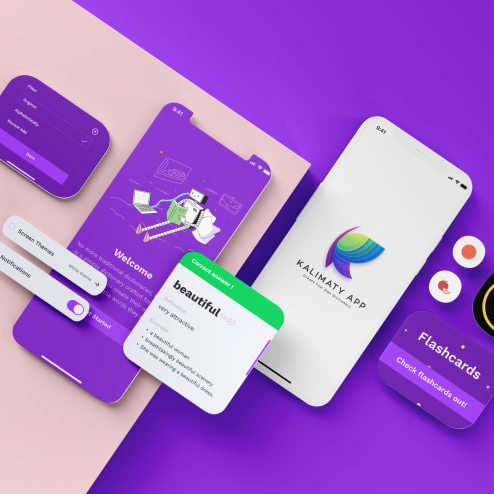
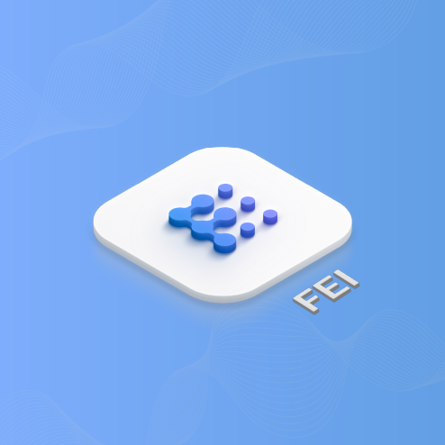

I regret that I had to suspend my face-to-face study at FPT for more than 1 year because of the covid epidemic, so my knowledge was only known through online learning. But I found my passion for UI/UX work through a friend. My days of homeschooling are no longer boring, I decided to learn more about it, and at the same time learn more knowledge about graphics to improve myself.
After all those years of the pandemic, I was able to directly do an internship in my chosen field, which is UI/UX at Capi Creative. The first time I was here, I felt very confused and didn't know what to do in this environment. But thanks to the kindness and meticulousness of the brothers and sisters here, I got used to my work very quickly. At the same time, I have trained my knowledge/level in a more scientific and advanced way. But as that is not enough, I still need to train myself more in UX to be able to go further in the future.
And I have decided to stay for a trial period for 1 more month, then I will try to become a full-time employee to learn a job here. I do not regret my decision because learning is always necessary at this age, to be ready to face difficulties in the future. If I am lazy in this field, I will be far behind everyone, and I will not be able to become the pride of my family.